Serene Ho
Financial Services Manager
Serene Ho
Financial Services Manager
As a Financial Consultant, I help my clients fulfil their financial responsibilities and dreams towards themselves and their loved ones. Journeying through with many over different life situations enable me to add value when helping my clients plan, making a difference in their lives.
To this end, I look to build a long-term relationship based on utmost trust and respect.
Winston Churchill
"Nobody plans to fail they just fail to plan?”
As an Agency Leader, I envision to build a team of P.R.O & S.H.A.R.P consultants to extend this honorable financial service to a greater reach with unstinting dedication and commitment . "
#PRO: Professional Reliable & Outstanding
#SHARP: Sincere ,Highly Motivated , Adaptable, Reliable, & Persevering
Bill Cosby
“In order to succeed, your desire for success should be greater than your fear of failure”
Every successful person has his or her dreams.
Newsletters
Articles Worth Sharing
Newsletter Issue 105: The Friendship Feast
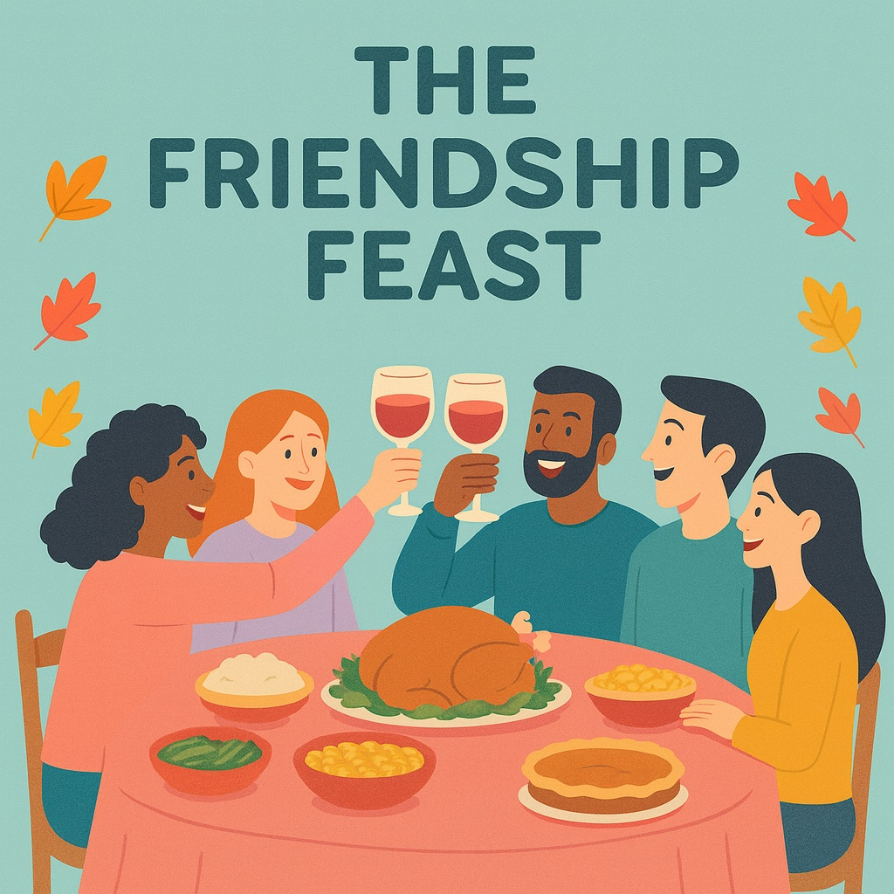Forget turkey and tradition for a moment—have you heard about Friendsgiving? This modern twist on Thanksgiving celebrates gratitude, connection, and good company. From creative hosting ideas to shared meals and local gatherings, discover how people everywhere (yes, even in Singapore) are embracing friendship as the heart of the season.
Read moreNewsletter Issue 104: Unforgettable Trips, Practical Tips
Embark on meaningful journeys with insights to plan memorable vacations, navigate budget travel, and uncover cultural treasures. Whether you're crafting a family adventure or exploring last-minute deals, these ideas inspire travel that deepens connections, stretches savings, and invites discovery.
Read moreNewsletter Issue 103: Teachings From Nature's Tapestry
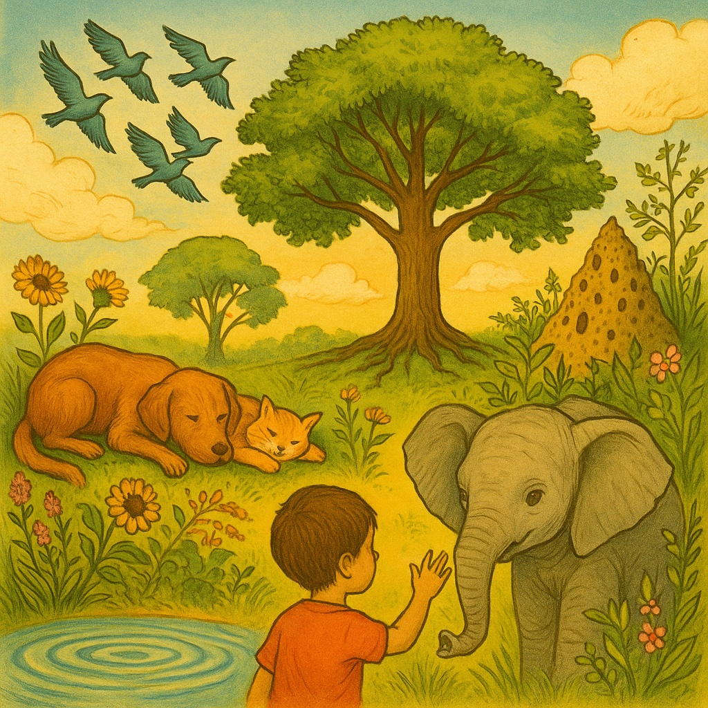Lessons flow through every corner of life—seen in creatures great and small, in blossoms and branches, in wind and water. Nature invites us to slow down, listen closely, and carry its gentle teachings into our own stories.
Read moreNewsletter Issue 102: SG60: Smart Savings, Savvy Spending, Special Memories
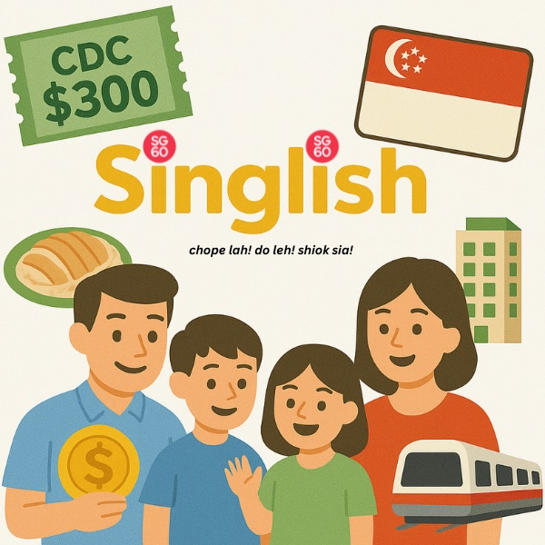As Singapore marks its 60th birthday this August, we celebrate more than just milestones—we embrace everyday moments. From savvy ways to maximise vouchers and nostalgic memories that stir the heart, to family-friendly adventures waiting to be explored, we honour our shared journey with pride, joy, and unity.
Read moreNewsletter Issue 101: Reclaiming Rhythm
After a pause or shift in pace, it’s natural to need a quiet reset. This season is about steady steps — not starting over, but picking up where you left off with a bit more clarity. A moment to reflect, realign, and move forward at a pace that feels right.
Read moreNewsletter Issue 100: Travel Wisely, Wander Freely
Whether you're jetting off with family, flying solo, or exploring on a budget, smart choices can make every journey smoother and more rewarding. From practical tips to meaningful moments, let thoughtful planning and openhearted curiosity guide your adventures—so you can roam far, light, and well.
Read moreNewsletter Issue 99: Incredible Moms

Whether we are mothers ourselves or simply have someone in our lives who has played a motherly role to us, chances are, our lives have been influenced in profound ways by motherhood. Let's take a moment in this issue to honour, value, and draw lessons from the incredible wisdom of women and mothers who have impacted our worlds.
Read moreNewsletter Issue 98: The Hustle for Health
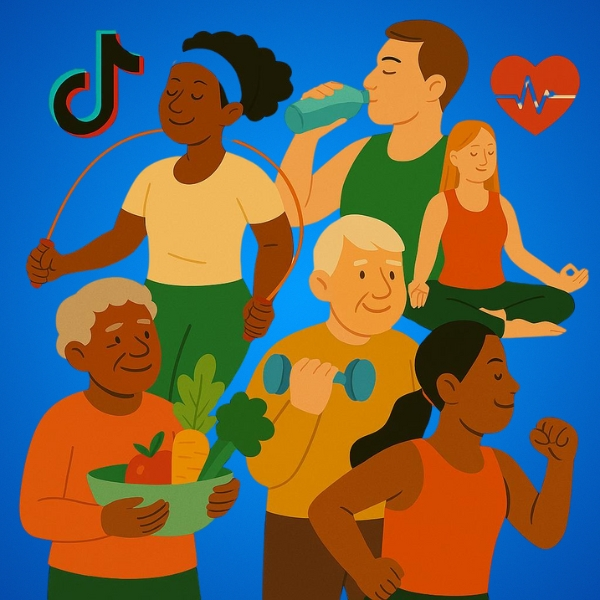In the pursuit of wellness, every small step matters. Discover how nourishing your body, staying active with intention, and making mindful choices can shape a healthier, more balanced life. From everyday nutrition tips to inspiring fitness journeys, find ways to thrive—body, mind, and spirit—one thoughtful action at a time.
Read moreNewsletter Issue 97: SG2025 Budget Perks
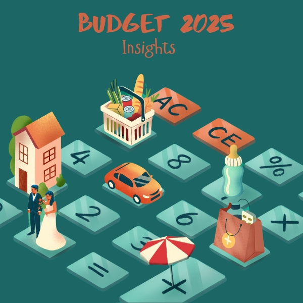Singapore’s Budget 2025 lays the foundation for economic resilience and community support. From financial aid and SG60 perks to business investments and digital growth, this edition unpacks key measures shaping the nation’s future. Discover how these policies impact businesses, families, and individuals in an evolving landscape of opportunities and challenges.
Read moreNewsletter Issue 96: Snake's Intuition: Prosperity through Wisdom and Connectedness
As Lunar New Year celebrations unfold and we gather with friends and family, let us remember that prosperity is not just about wealth and abundance but also about the wisdom shared and traditions passed down through generations. Amid the laughter, meals, and festivities—and the inherent hope and symbolism they carry—be kind and mindful to yourself and others, ensuring that the deeper meaning of heritage, connection, and togetherness endures beyond the moment.
Read moreNewsletter Issue 95: Turning A Page: Embracing Endings & Celebrating Wins
As we enter the new year, it's the perfect time to celebrate endings and acknowledge our achievements. Embracing closure and recognising small wins fosters personal growth, resilience, and emotional well-being, transforming life's transitions into opportunities for reflection and reinvention as we move forward with intention.
Read moreNewsletter Issue 94: Cultivating a Grateful Heart
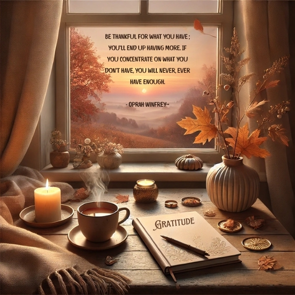As the year winds down, it’s the perfect time to reflect on the many reasons to be grateful in our lives. From uplifting mental health to strengthening connections, gratitude helps us end the year with purpose and warmth. Discover simple practices and insights to embrace appreciation and nurture meaningful moments this season.
Read moreNewsletter Issue 93: Happy Travels
Embark on meaningful journeys with insights to plan memorable vacations, navigate budget travel, and uncover cultural treasures. Whether you’re crafting a family adventure or exploring last-minute deals, these ideas inspire travel that deepens connections, stretches savings, and invites discovery.
Read moreNewsletter Issue 92: Family First: From Exams To Finance
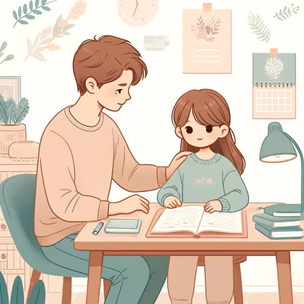As families navigate the challenges of exam season, it's important to foster resilience, support growth, and nurture well-being. These insights explore how to create a balanced, supportive environment for children, helping them thrive academically, emotionally, and financially.
Read moreNewsletter Issue 91: Persistent Progress, Purposeful Pursuit
Persistence and perseverance are the cornerstones of personal growth. As we enter the final stretch of the year, these traits become even more essential. Discover ways to harness determination, build resilience, and stay committed to your goals. Even when the journey feels long and challenging, remember—you’re closer than you think. Let’s push through this last lap together.
Read moreNewsletter Issue 90: Stretching The Dollar
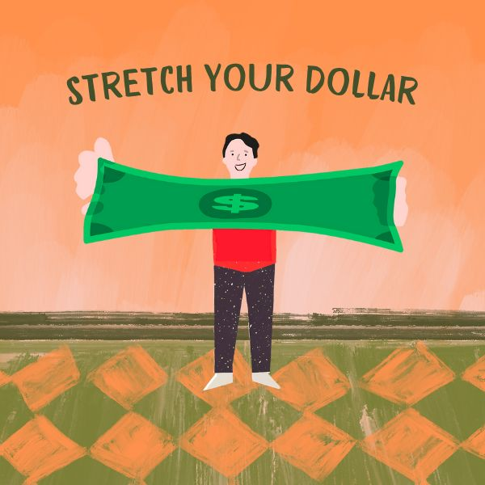Navigating the rising cost of living requires strategic planning. This issue provides tips on budgeting, skill development to increase income, and utilising resources to manage money. I hope these strategies help empower you to stretch your money further and maintain financial stability.
Read moreNewsletter Issue 89: Boost Immunity, Travel Safely
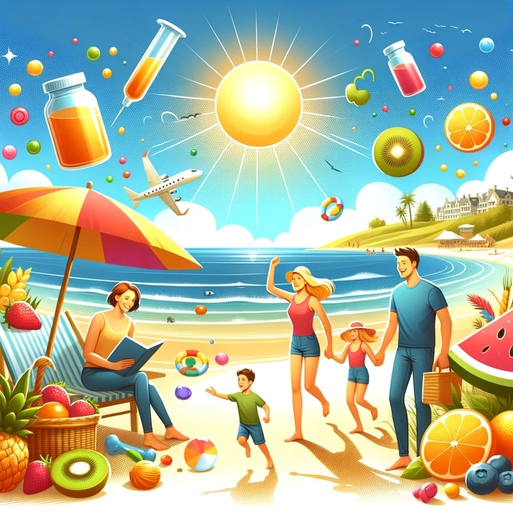Prioritizing our health and immunity is essential, especially with summer holidays and travel on the horizon amid the recent surge in COVID-19 cases. Here are some practical tips, nutritious recipes, and expert advice to keep you safe and ensure healthy and enjoyable summer vacations for you and your loved ones!
Read moreNewsletter Issue 88: Keep Cool & Beat the Heat
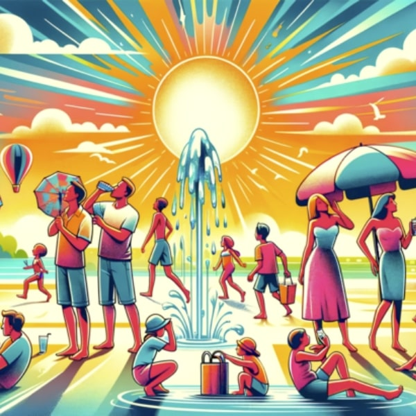As we approach the time of year when scorching temperatures send us seeking refuge indoors, this issue offers essential tips and strategies for managing the heat. Arm yourself with knowledge and discover ways to stay cool, hydrated, and healthy amidst the sweltering heat, ensuring you thrive in your daily life!
Read moreNewsletter Issue 87: Growth and Transformation: Nobody Said It Was Easy
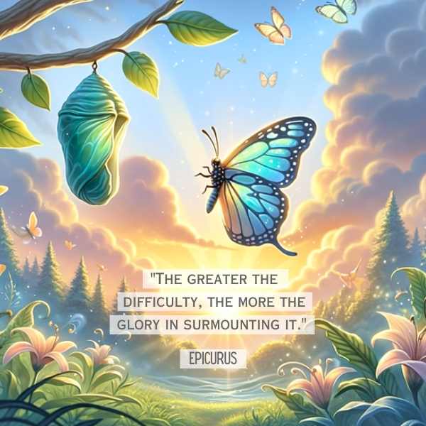Life is a multifaceted journey of growth and transformation. From overcoming setbacks to embracing professional and personal development, this issue contains wisdom on self-forgiveness, career and financial success, and the limitless power of lifelong learning. The process of growth may not always be easy, but it will be worth it. I hope this enriches your life.
Read moreNewsletter Issue 86: Plan Well. Age Well.
Amidst rising costs, aging and retirement planning is becoming a growing concern for many. Yet, more than just ensuring financial readiness, one who is planning to retire also needs to be psychologically prepared for the shifts in lifestyle, routine and everything that comes along with it. In this issue, let's explore expert tips on staying healthy, mentally sharp and financially secure, so we can age gracefully in our golden years.
Read moreNewsletter Issue 85: How To Ride The Dragon
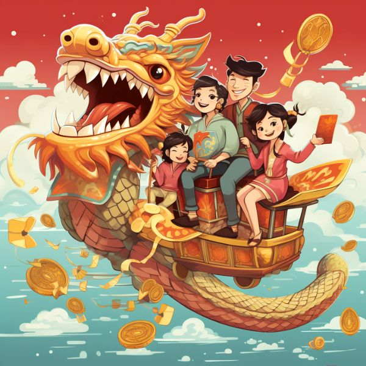As we embrace 2024, discover essential insights for a prosperous journey ahead. Explore key financial strategies and economic trends aligning with the Dragon Year's promise of prosperity. Immerse in the cultural vibrancy of the Lunar New Year celebrations. I hope this issue with its blend of wisdom and practical advice equips you to navigate the opportunities and challenges ahead with confidence. Together, let's ride the Dragon!
Read moreNewsletter Issue 84: Reflect, Review & Recharge
In this issue, here are some insights on mindful reflection, effective goal-setting, and strategic reviews. I hope this helps you equip yourself for a thriving year ahead with impactful resolutions and fresh perspectives. Let's embark on this journey of growth and renewal together.
Read moreNewsletter Issue 83: Holiday Highlights: Echoes of Joy
Embrace the spirit of the holiday season in this month's issue, where cherished traditions meet thoughtful innovation. From smart savings and healthy feasts to meaningful gifts and cozy stays, our collection of articles offers a reflective journey through holiday warmth. Savour every moment with our handpicked tips and recipes, and let's celebrate the joy and generosity that define this wondrous time of year.
Read moreNewsletter Issue 82: Inflation & You
As inflationary pressures continue, affecting both individuals and businesses, it is vital to equip ourselves with effective strategies to navigate this environment. This issue provides pragmatic insights and ideas, guiding us to not only weather these economic challenges but also thrive in the midst of them. I hope this brings us greater financial resilience and empowerment.
Read moreNewsletter Issue 81: Empowering Children
In celebration of Children's Day, here is a friendly collection of articles brimming with insights! I hope these writings can guide us in embedding valuable skills, boosting financial literacy, and laying down a roadmap to raising resilient, balanced children. May we empower the upcoming generations, helping them blossom into well-rounded and holistic individuals. Let's cherish the joy of nurturing our future
Read moreNewsletter Issue 80: Home Dreamers
Making decisions on property is not trivial, as they often have effects on our quality of life in ways that are not just material but also financial and emotional. Regardless of our experience levels in making decisions on our properties and homes, it helps to have an appreciation of what resources are involved, and how we can be resourceful about them. I hope you find the materials in this issue useful.
Read moreNewsletter Issue 79: Before It's Too Late...

In today's rapidly ageing society, advance care planning and long-term care planning are emerging as critical considerations for ensuring a comfortable and secure future. As we journey together through the intricate aspects of planning for what lies ahead, it's never too early to make such vital decisions. It's your future; plan it well.
Read moreNewsletter Issue 78: Unlocking Potential of Our Awe and Envy
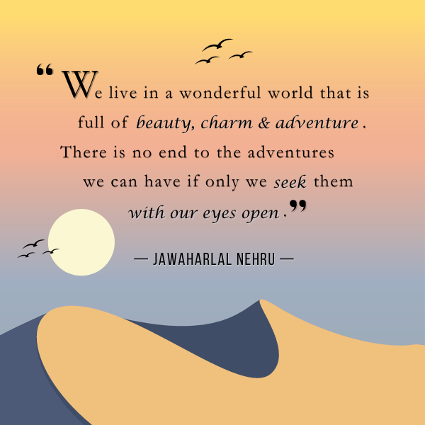In the delicate balance between awe and envy lies an opportunity for growth. Awe opens our eyes to the beauty and possibilities around us, while envy stirs our desires for improvement. By using awe as a wellspring of inspiration and envy as a catalyst for positive change, we get to harness these emotions to fuel our ambitions, cultivate empathy, and create a brighter future for ourselves and others in various aspects of our lives.
Read moreNewsletter Issue 77: Living with New Realities of AI and ChatGPT

As artificial intelligence (AI) and chatbots like ChatGPT become ever more prevalent, AI’s potential to transform our lives and economy cannot be understated. With the increasing adoption of these technologies, they will not only transform the ways we use or consume information, but they are also poised to play a pivotal role in just about every aspect of our lives, including work, finance, and parenting. In this issue, we explore the nuances of AI and the possibilities it brings to our world.
Read moreNewsletter Issue 76: In Honour of Moms
Whether we are mothers ourselves or simply have someone in our lives who has played a motherly role to us, chances are, our lives have been influenced in profound ways by motherhood. Let's take a moment in this issue to honour, value, and draw lessons from the incredible wisdom of women and mothers who have impacted our worlds.
Read moreNewsletter Issue 75: Keep Calm & Innovate

Necessity is the mother of invention. Throughout history, humans have demonstrated the ability to innovate, solve problems, and create solutions in the midst of crises, resulting in some of humanity's greatest inventions. All it took was resourcefulness, action, and persistence. Through this issue, I hope to provide insights into how we can live life constructively and creatively, regardless of the challenges that we may face today.
Read moreNewsletter Issue 74: Bright, Brainy & Beautiful Living

As we get back into the groove of work, our most important arsenals have to be our health and brains. After all, these are essential in allowing us to lead a functional and meaningful life. To do that, we need to take care not to fall ill and ensure that we upkeep our physical, mental, and social well-being. Let us explore in this issue the various ways that help us protect and strengthen our overall health.
Read moreNewsletter Issue 73: The Golden Gift of Intentional Quiet

For many, the festive season is a time of food, celebrations, social interaction, and hype. Coupled with the continuous demands of work and life, such periods can sometimes leave us feeling drained, and some of us may even struggle to get a breather. In this issue, I have put together resources on how we can possibly wind down and benefit from more intentional quiet and less noise.
Read moreNewsletter Issue 72: Finding The Silver Lining
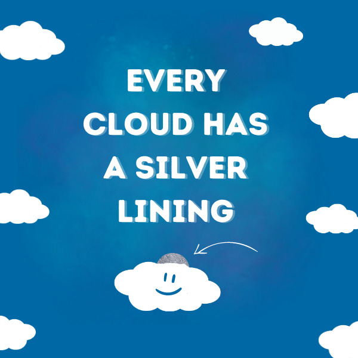As the world enters a recession, the upcoming year can pose a challenge for many due to increasing economic uncertainty, and the natural fears surrounding it. In this issue, we look at some trends and possible actions that can help us become more emotionally and financially resilient to not just ride out the challenges, but rise above them. I hope this gives us hope.
Read moreNewsletter Issue 71: Planning Ahead
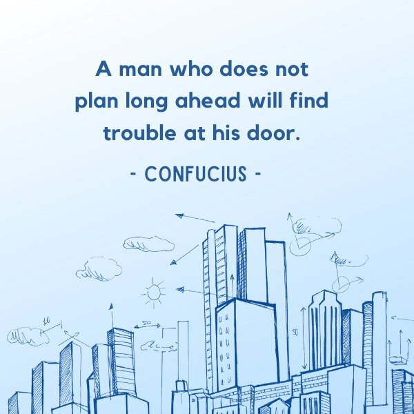We live in three distinct timeframes - the Past, the Present, and the Future. Many times, we tend to live and make decisions based on what gives us immediate gratification, and often to our detriment. Despite not knowing what tomorrow will bring, planning ahead removes uncertainty and provides clarity to our lives. In this issue, I have included articles that I hope will inspire you to take actions that your future self will thank you for.
Read moreNewsletter Issue 70: Taking A Walk
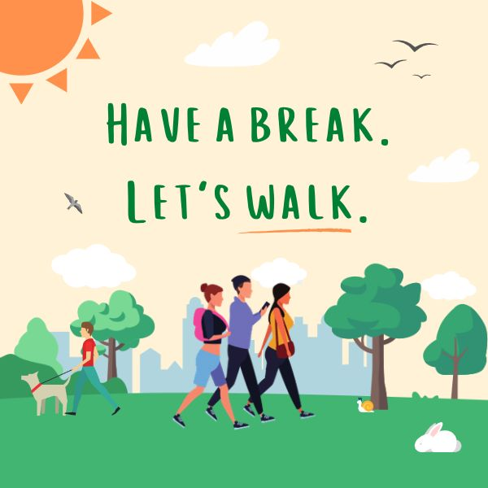Many of us lead busy and stressful lives. Even when we may be caught up meeting deadlines, sprinting towards our next goals, or looking after our families, we cannot neglect taking appropriate breaks for our well-being. While it may feel counter-intuitive to do so, sometimes the best thing is simply to step away from the four concrete walls to go for a walk outdoors. It refreshes the mind, body and soul, and is beneficial for our health and creativity. So let's lace up our trainers and walk our stresses away.
Read moreNewsletter Issue 69: Mind Over Money
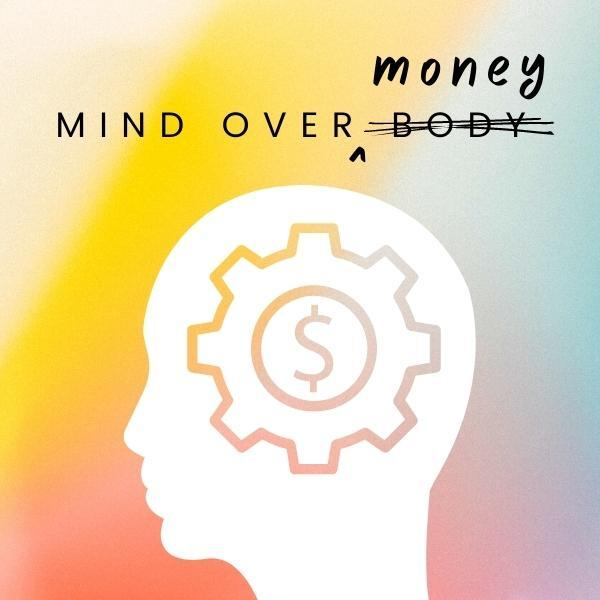In an environment of rising inflation and uncertainties in global geo-political climate, almost no one is spared from the economic consequences of the day. It is therefore more important than ever to be intentional and mindful in how we manage our finances in our daily living. Here, I have put together some resources which you can tap on to help you gain a better insight on how you can be more savvy with your money.
Read moreNewsletter Issue 68: Navigating Differences, Conflicts and Relationships with Maturity
Every one is different, and differences in opinions, interests, backgrounds and personalities tend to come with conflicts. Whether is it our co-workers, friends, family members or even our partners, disputes are not only common, but they're natural and sometimes inevitable. The question is, while such conflicts arise, how do we navigate them? Do we attempt to work through issues amicably with others, or do we allow our egos and emotions to rear its ugly head? Today, we look at practical tips on how we can manage ourselves and relationships in more mature ways.
Read moreNewsletter Issue 67: Better Than Before
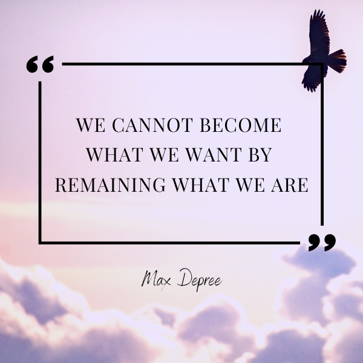As humans, the pursuit of change and progress is something that is innate to every one of us. Like it or not, there will always be things in life that we hope could be a little different, a little better in the way that daily situations & events turn out. It could be in the way we think, speak, or the way we handle everything from our finances to our relationships with others. We seek to become better -- and we should. As we strive to continuously exceed our potential, we rise above all previous versions of ourselves and grow stronger. In this issue, we look at some ways in which we can embrace a better self and an even better future.
Read moreNewsletter Issue 66: Self-Doubt & Self-Confidence
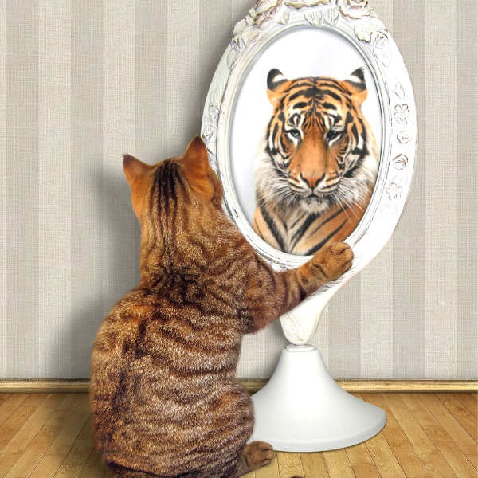In life, there are days and moments where everything we do does not feel enough, or face situations that are beyond our control. A common response to such instances is to doubt ourselves and our abilities, and that is a very normal and human thing to do. But the effect of self-doubt can cut both ways: It can either spur us to achieve our goals and thereby boost our confidence levels, or cause us to feel entirely powerless and paralysed. Fortunately, whether we allow it to work for or against us is mostly up to us. In this issue, we will explore the ways in which we can harness self-doubt to build confidence -- one step at a time.
Read moreNewsletter Issue 65: 80 Summers, 80 Winters, 1 Life
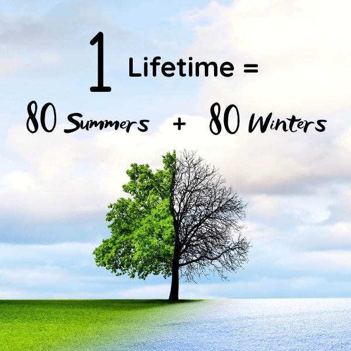Statistically, most people live till an average age of 80 years. Although this number varies across cultures and nations, we cannot deny that life is still all too fleetingly short. 80 years a lifetime translates to 80 summers and 80 winters - to love, laugh, live, and make the most of our time on this earth. Far too often, when faced with our mortality, we look back at our lives and think of all the things that could have been different. Regret may sometimes be inevitable, but it is still possible to live an unlimited life with the limited time that we have. In this issue, we look at some of the ways we can do so.
Read moreNewsletter Issue 64: Travelling Again
For the past years, given the pandemic and restrictions, many of us were forced to re-evaluate how to plan and book trips for holidays, or consider whether we should even be planning for any travel at all. Now, as borders are opening up, we have reached a stage where many of us are ready to start traveling again and make vacation plans once more. The catch, though, is that traveling will likely continue to be complicated as new variants emerge. How then do we plan for travel? In this issue, we explore this matter in more depth.
Read moreNewsletter Issue 63: Being Positive
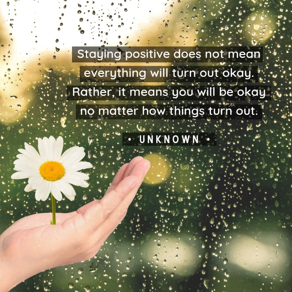Life can be unpredictable with obstacles, making it sometimes difficult to stay afloat. Whether it is the loss of a loved one, stress from work, or financial woes, everyone faces challenges and does at some point, struggle with remaining optimistic or hopeful. Nonetheless, it is still important to maintain positivity to keep us going; by finding the good in the bad, and being the light in the darkness. For this issue, let us explore on what being positive means & how we can harness it in ways that truly benefit our lives.
Read moreNewsletter Issue 62: Social Media and Mental Health
As humans, we have an innate need for connection and approval from others. Often, we make an effort to gain validation and this is natural. Yet, in our world today, this need for others’ approval becomes magnified; as many of us are constantly plugged in on social media, we tend to get caught up in the pursuit of “likes”, “shares”, “follows” & engagement. These can have implications on our mental well-being and happiness. Through this issue, I hope that we can be more aware of the impacts & risks associated with excessive use of social media, and what we can do about it so that we can live out our best lives.
Read moreNewsletter Issue 61: Being Savvy This Festive Season

It is a season of feasting, socialising and spending time with our family and friends. Amidst the bustle of festive preparations and joviality, let us not forget to take care of our well-being even as we celebrate this time of wealth, health and happiness. Stay safe, savvy and prosper!
Read moreNewsletter Issue 60: Looking Towards 2022
By this time, we would have endured quite a long period of the COVID-19 pandemic and many things have changed. Collectively, we have adapted to new ways of living, working and socializing. While there is no telling of when this pandemic will truly “end”, one thing’s for sure: Life goes on. The best we can do is to continue to look towards the future and live out the best we can. As we head into a new year, here are some predictions and trends we can look forward to.
Read moreNewsletter Issue 59: 6 Essential Money Moves To Make In Uncertain Times
In times of uncertainty, it’s easy to get overwhelmed. With the COVID-19 outbreak, we are faced with the challenge of adapting life around the virus and navigating intense market volatility. This leaves many of us feeling anxious and even disempowered.
Read moreNewsletter Issue 58: Misconceptions that hold us back
Confucius, the Chinese philosopher, left us with these words to contemplate: The man who asks a question is a fool for a minute: the man who does not ask is a fool for life. As the year winds down, it is time to reflect on some popular and widely - accepted beliefs and misconceptions that we may hold that do not serve us in achieving our goals and desires. Today, we look at debunking some of these misconceptions to expand our thinking and explore new perspectives and horizons.
Read moreNewsletter Issue 57: One Thing At A Time
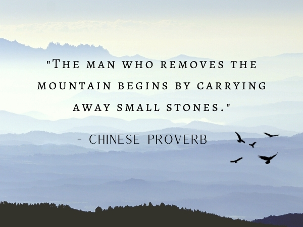In meeting the demands of work and every day life, many of us can feel compelled to do all things at once, and may become overwhelmed or less effective as a result. To counter this, it is worth taking a moment to adjust our pace; to give ourselves the space to practice taking one step at a time in the ways we perform our tasks and how we manage our minds & emotions.
Read moreNewsletter Issue 56: Habits & Decisions That Compound
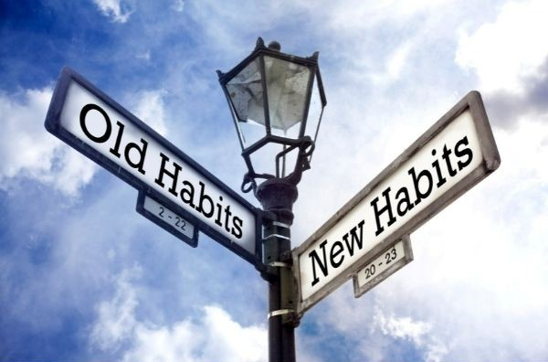As human beings, we are a culmination of our environment, decisions, behaviours and habits. It is worth giving thought to how we live our lives; taking a step back to reflect on some of our own less-than-ideal tendencies and ponder about how we can mitigate or improve upon them. Here are some resources that I hope can help us foster habits and patterns that can create an upward cycle for ourselves over time.
Read moreNewsletter Issue 55: Managing Burnout
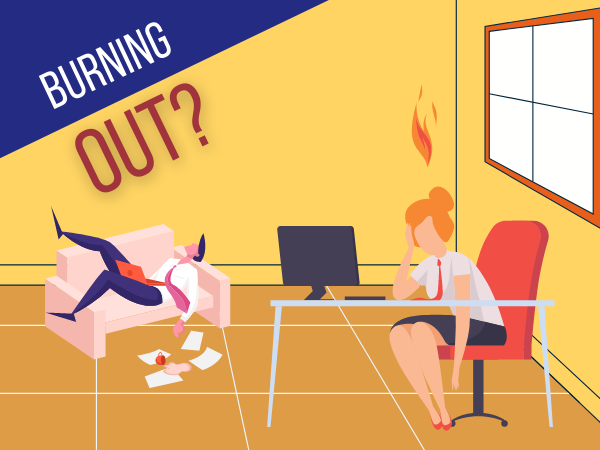In a world where more of us are increasingly working remotely, the issues of exhaustion, burnout and digital fatigue have become more pronounced in recent times. The implications on mental health and quality of life are real. Here are insights and resources that I hope can help us better understand the nature of the burnout that we may experiencing. More importantly, we can learn to manage, uplift ourselves and also the people around us.
Read moreNewsletter Issue 54: On Leadership
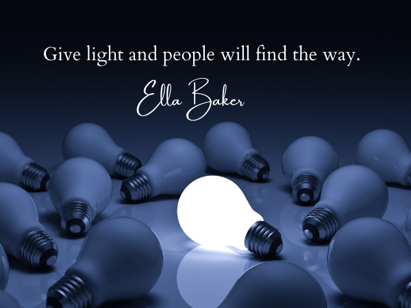Leadership is the act of guiding a team or individual to achieve a goal through direction and motivation -- and there is a leader in all of us. This issue contains insightful resources and pointers that touch on the various under-talked about but important aspects of leadership. I hope this inspires us to not just exercise good leadership in our daily lives as individuals and organisations, but more importantly, help us get through and thrive even in difficult times.
Read moreNewsletter Issue 53: Productivity, Personal Effectiveness & Meaning
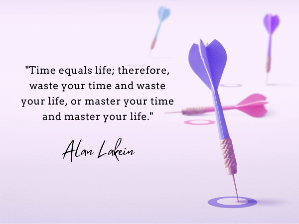As our personal lives get increasingly intertwined with our work in this season, it becomes more important than ever to find ways to devote our energies to become more effective & productive as individuals. Here, I'd love to share with you on some resources and powerful ideas on how we can not only become more productive, but also make our work & daily life more meaningful in the process.
Read moreNewsletter Issue 52: Living A Good Life
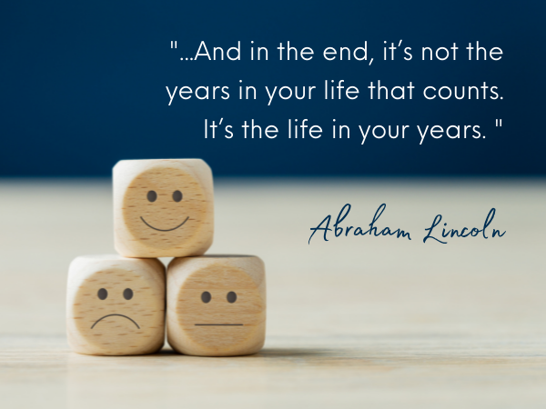What does it mean to lead a good life? The meaning of a good life, or life for that matter, is subjective. But there are some evergreen truths and wisdoms that we can all live by that help us gain the most out of life even through obstacles and challenges. In this issue, I have put together for you a series of insights, tips & advice by some of the best thinkers throughout history on how to live out a good life. I hope these resonate with you.
Read moreNewsletter Issue 51: Dignity and Why It Matters
Dignity is the state or quality of being worthy of honour or respect by virtue of being human, and every person has an intrinsic need to feel valued and needed. Yet, in our world, there is often a gap between the ideals and realities of how dignity is accorded to individuals across age, gender, social statuses and financial positions. In this issue, I'd like to bring attention to the topic of dignity, and the ways which we can protect & honour the dignity of others and ourselves.
Read moreNewsletter Issue 50: Empowering Women In Our Midst
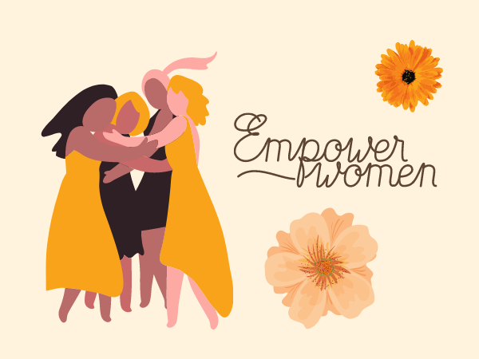Women have long played a huge part in our society and economy. When it comes to uplifting women, the work extends beyond just international women's day or month. In fact, it requires continuous effort from not just leaders, but also every day folks like us to recognise and appreciate the great potential of women in our lives. In this issue, I'd like to share insights on how we can be enablers of women's progress while staying aware of the realities and struggles they may face. I hope this helps us in empowering the women and girls in our midst.
Read moreNewsletter Issue 49: The Gift of Paying It Forward
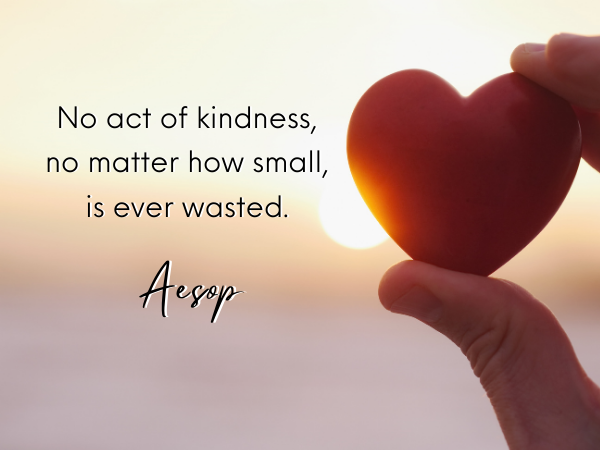When was the last time you received kindness from somebody? When was the last time you extended an act of kindness to someone else, and to what end? As it turns out, there can be tremendous merits and outcomes in paying forward a kindness received with a good deed to somebody else, especially when done out of gratitude. The concept of "Paying It Forward" is nothing new, but in our world, I believe we could do with more compassion and selflessness as it brings out the best in us.
Read moreNewsletter Issue 48: Done is Better Than Perfect
As we begin a fresh year, it is a good idea to not just evaluate ourselves based on the previous year on how we have been managing our lives, but also to find out ways to become more productive as we move along. In this issue, I'd like to share with you some powerful ideas on productivity and how we can make the best of our resources, time, energy and capabilities. Let's do this!
Read moreNewsletter Issue 47: Of Languages, Love and Possibilities
In the words of Poet Ali in his TED Talk, "Every language we learn is a portal by which we can access another language"; the more we know, the more we can speak. To round off the year, I'd like us to take a moment to learn new concepts, stories and ways of seeking and connecting, which will empower us to adapt to the needs of others & ourselves in the way we relate, love, heal, and see possibilities. I hope this inspires you.
Read moreNewsletter Issue 46: Guiding Principles and Tips on Taking Charge of Finances in Our Lives
In a year where many of us are affected and perhaps feel powerless over our incomes amidst a pandemic, it is a good time to take stock of our financial health and confront our feelings about them & the way with deal with them. Whether we are young, middle-aged or senior, here are some important principles & practical tips on money management that we can fall back on which can go a long way into helping us optimise our finances and become financially wiser.
Read moreNewsletter Issue 45: On Teaching, Learning & Growth

All of us would have people around us that we learn from in our lives. And people whom we in turn teach and need to be accountable to at some point - as students, working adults or parents. The better we are at relating and leading others into growth, the better we become as individuals. In this issue, I hope we can draw some lessons and wisdom from these materials that can help us cultivate values and cultures that we want in our lives and lift us up.
Read moreNewsletter Issue 44: The Ability to Rethink & Reassess Our Minds
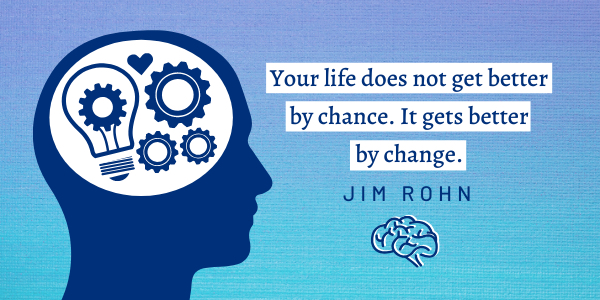As humans, we often like to think we're right, even when we can be wrong at times. Many of us have the unconscious tendency to seek information that support our existing beliefs & disregard or undermine those that do not match ours. But doing so without awareness or questioning can have adverse effects in the way we think, make decisions & live our lives. Today, I'd like to share with you some potential consequences of confirmation bias & what we can do about them.
Read moreNewsletter Issue 43 : Staying Grounded in Things that Serve Us
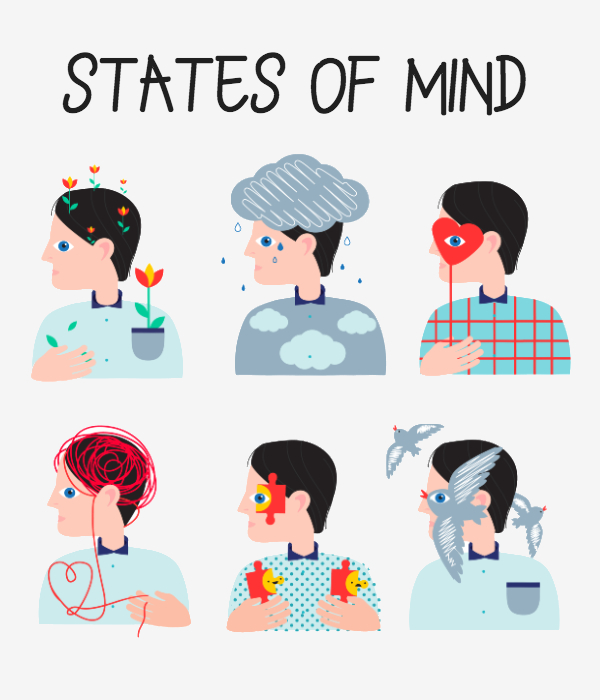The world as we know it has changed for good on pretty much every level - from our lifestyles, to habits, to incomes and economy. As we navigate our way and find our place in trying times, it is important to stay grounded and keep the faith as we focus on seeing and creating opportunities, solutions & meaning. While there are no quick fixes in times like these, there's still a space for us to find ways to improve and cope better in our lives. I'd like to share them with you in this issue. Let's keep our heads up in choosing to persist in hope & good thoughts, and I believe we will emerge stronger than before.
Read moreNewsletter Issue 42 : Moms Never Retire?
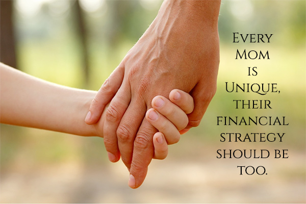As they dedicate their love and lives to their households and make constant sacrifices for their family’s & children’s well-being, mothers never retire. For all these, moms deserve more thoughts besides during Mother’s Day. But should mothers also think about planning their own retirement — financially speaking? In this issue, as we give tributes to all mothers, we would also like to give thoughts to a mother’s financial freedom. Mothers deserve a worry-free retirement as well.
Read moreNewsletter Issue 41: This is the 8th Wonder of the world - Einstein

Albert Einstein said, "Compound interest is the eighth wonder of the world. He who understands it earns it. He who doesn't, pays it."
Read moreNewsletter Issue 40 : Mastering the Skill of Learning New Skills Fast
Today's phone in our pocket has 100,000 times the power of the computer that landed man on the moon 50 years ago. Our world is evolving at breakneck speed today. The World Economic Forum projected that more new jobs will be created compared to the ones lost. Uncertainty remains about what these new jobs would be. But the time to change our approach to learning new skills has come. The time is now. The 4th Industrial Revolution has begun.
Read moreNewsletter Issue 39 : What is hurting Employees and Employers
There are many new things to deal with at this time while we are being isolated from life-as-usual. A new lifestyle, a new future and something that can be quite subtle - a new kind of burnout. It should do us well to be aware about this so we can learn to disengage when we need to. I wish you and your loved ones good health and may you continue to stay safe!
Read moreNewsletter Issue 38 : Holding Space in Difficult Times
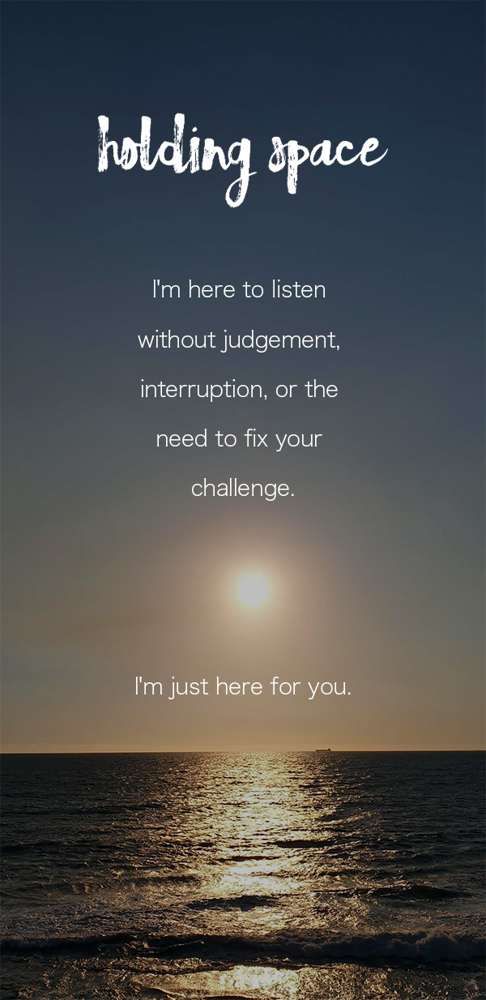Amidst a pandemic, the profound impact & discomfort of loss or the prospect of loss is felt almost universally. We may find ourselves and even those we care about feeling anxious & restless, which makes it challenging as we find ways to adjust not just physically, but also mentally & emotionally. At this time, emotional support for one another becomes ever more essential. Here, I'd love to share with you insights that can help us have a deeper understanding on the complex emotions that we may be dealing with, & the ways in which we can provide meaningful social support in our daily interactions through being present & holding space for others.
Read moreNewsletter Issue 37 : Covid19 - No turning back from a new future and reality
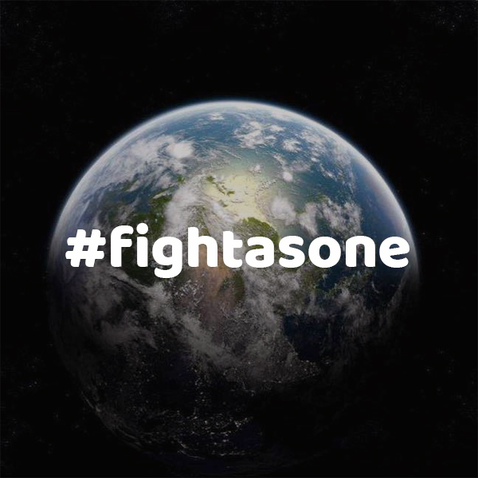What the eyes cannot see is bringing countries to their knees as we write. The full impact of Covid19 is still unknown. It has ushered in a new reality for the World. Our lives will never be the same again. And Covid19 won't be the last. While we #fightasone, let's see how we can prepare ourselves and our children for this new future - together. Here are some good reads that I believe can help us rethink this new future and its possibilities. If you find these resources useful, please forward them to those you care about, especially at a time such as this. Cheers!
Read moreNewsletter Issue 36 : Make these 6 decisions
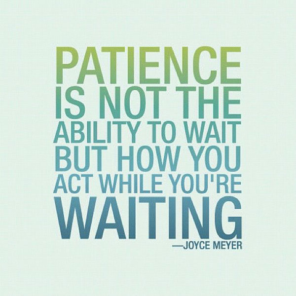Here's wishing you and yours a very fruitful 2020, and the best is yet to come! Another year, and what better way to start it with a collection of thoughts that might turn out to touch your life for the better? I hope you could find something useful and share along with those you care about too. Cheers for a blessed 2020!
Read moreNewsletter Issue 35 : When the going gets Rough
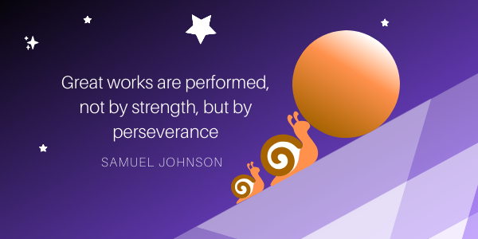When the going gets rough, it can at times be easy to lose sight of what we set out to attain in our lives, be it in our personal endeavours, work or finances. The process of going & pushing through such situations may not be most comfortable, but persevering and talking about how to handle them is necessary. These are perspectives I found useful and inspiring. I hope this gives you hope.
Read moreNewsletter Issue 34 : Trust, Relationships and Emotional Security
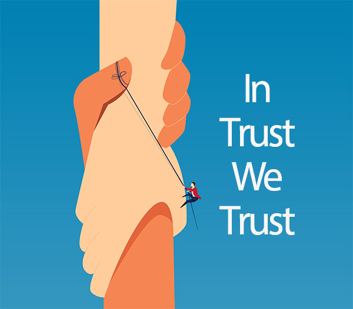In many ways, relationships are key to our well-being, as trusting, fulfilling relationships lay the foundation for our emotional health and security. But to work through relationships and trust matters aren't always linear or clean - they can be messy and raw. Here are some articles that I found incredibly valuable that enrich us in our personal and professional lives.
Read moreNewsletter Issue 33 : These are simply worth sharing with you
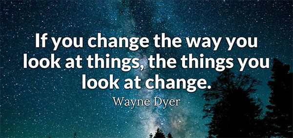Change is hard. To force change is harder. They usually don't last. Perspectives however, are easier to accept. They change our minds and maybe that's what we need more than change itself. I hope you enjoy these articles.
Read moreNewsletter Issue 31 : The Power of Tiny Gains
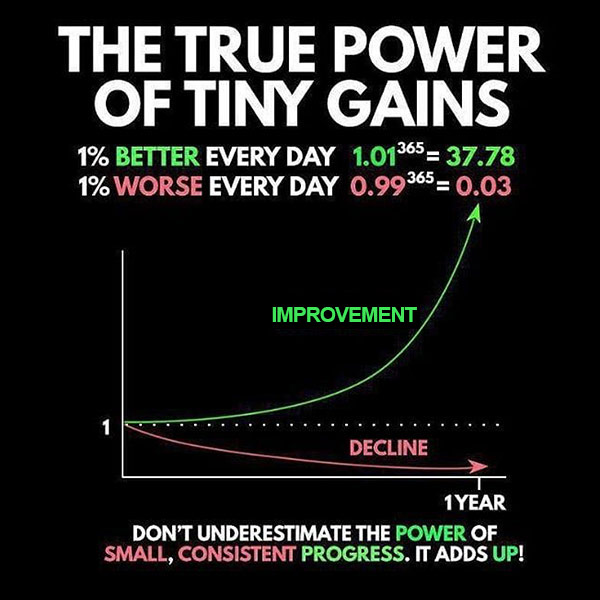These are some rather transformative articles that could help you and those you care about. So please be free to share them. I hope you find them beneficial. If you like them, do drop me a note and I'll be very glad to know I've added value and touched someone.
Read moreNewsletter Issue 30 : How the World forgot to sleep
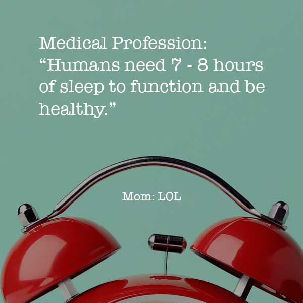The lack of sleep being linked to chronic illnesses like diabetes and heart disease isn't a happy story. Certainly not for those of us who are more conscious about building happiness in life. Please share this newsletter issue with those you care about. We can impact lives together!
Read moreNewsletter Issue 29 : Don't leave life without it
The Bucket List - chances are that you may not have made one. It is an interesting journey that we can take together. It's also a lot easier taking a peep at some of the most inspiring bucket lists that we have put together to share with you. Let's start one and live it out!
Read moreNewsletter Issue 28 : 8 Ridiculously Good Recipes That Only Take 15 Minutes
Since our taste buds are not working like black and white TVs. We know it's meant for some tasty good food. Yummy! Let's stay healthy, and also up our knowledge about making some nice interesting food. Here are some really good resources curated for you.
Read moreNewsletter Issue 27 : Life's most Powerful Lessons
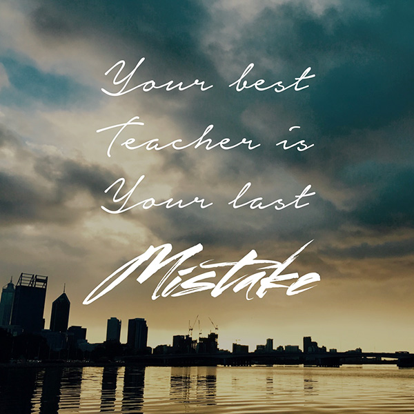There's a man in Singapore, that every time he concludes a business deal, he would go buy a plant and plant it somewhere. It's a simple way of giving back. He was also able to disengage and be with himself while doing something meaningful, albeit how simple it was. In this issue are some more examples of such life's lesson that we can benefit from. All we need, is to just take some time, slow down and breathe in the fresh air.
Read moreNewsletter Issue 26 : 3 Financial Wisdom from a woman with 3B Net Worth

There are just too many things that we know to be good for us, but have not yet become a part of us. Applying wise financial habits may be one of them. Here are some to learn about by seeing them from the eyes of a very successful woman - Oprah Winfrey. Change requires conscious efforts. I hope some of these thoughts will begin to be a blessing in your life. Cheers.
Read moreNewsletter Issue 25 : Come 15th May, Singaporeans have One more thing to be proud of
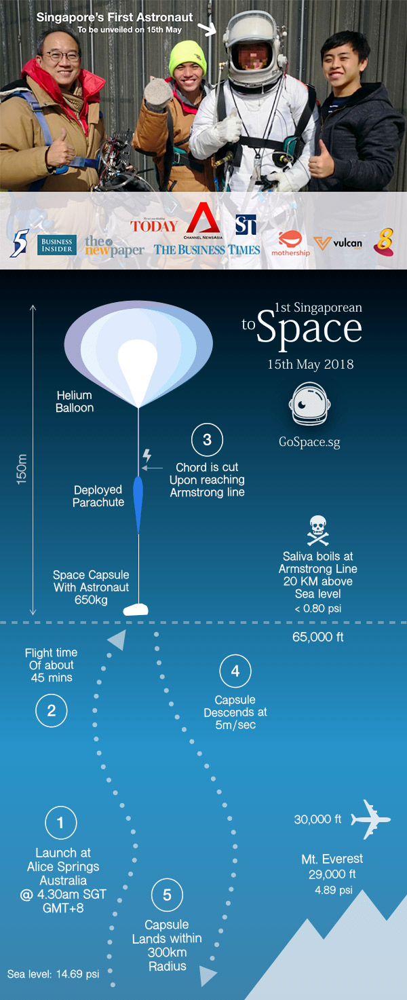In case you missed the news, besides the big 3 - US, Russia & China, tiny Singapore would be the next to send a human into Space using a helium Stratospheric balloon capable of lifting an SUV. This is a 5 years arduous journey filled with many inspiring stories. A Visionary who saw the possibilities, followed by 150 applicants to be Singapore's first Astronaut, and finally an extraordinary individual to make the trip, laying his life on the line. Yet his project isn't about Space. It's about creating a better mental model for Singaporeans - that with the heart, mind and grit, we can do great things. Enjoy this historic moment.
Read moreNewsletter Issue 24: The Interesting secret
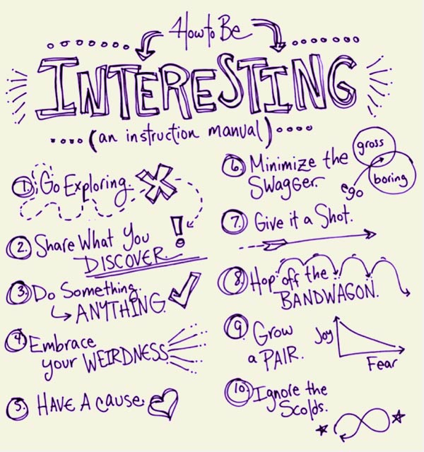Or rather, this issue is about learning the secrets of being interesting. Even calling it a secret is a little too much. In today's world of overwhelming information overload, it's about paying attention to certain things that some people do to make themselves more interesting than others. We can all do better in life with a little dose of this knowledge. So let's dig in!
Read moreNewsletter Issue 23: The way we Think
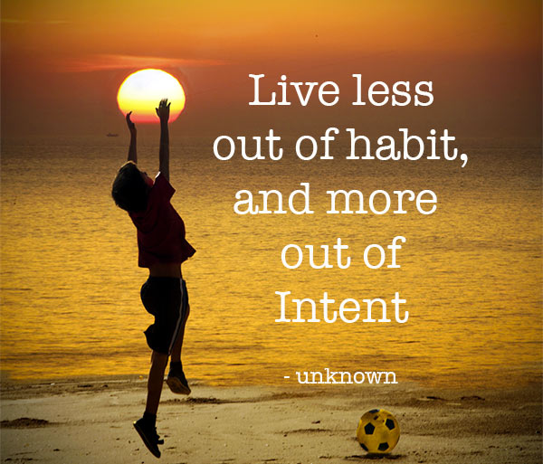In this issue, I'd like to do something different. All of the highlights are very interesting videos from TED talks about the way we think. The videos are between 15 to 30 minutes, but they are well worth your time I promise. Hope these resources will help create marginal changes in your life every so often. Let's be enlightened together!
Read moreNewsletter Issue 22: Why Happiness is linked to Deep Talk
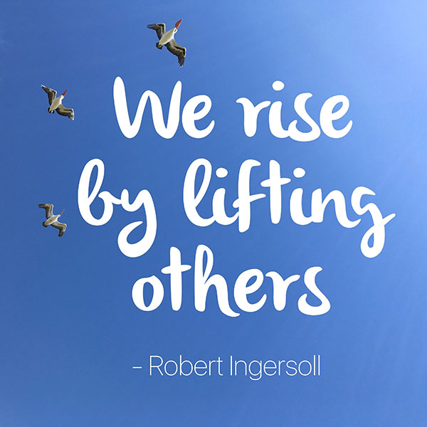Research seems to point to the fact that those who engages in deeper conversations with others are happier people. This is what I call a happy finding. It levels with what makes us human. We speak, we listen, we feel, we learn, we take and we give. And deeper conversations allow us to lift each other up.
Read moreNewsletter Issue 21: Half of the jobs in 2020 are not yet known
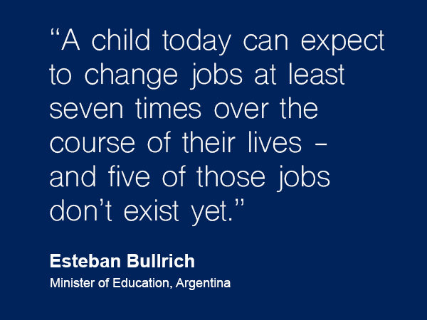In the last issue, we discussed how robots will change our lives in the future. It has become increasingly important for us to keep our minds on the ball, stay sharp and stay progressive. If half the jobs in 2020 are yet to be known to us, how can we prepare ourselves and our children today? To face a fast changing future, we need to first understand it. We need to try and take a peek into this future and start to embrace change.
Read moreNewsletter Issue 20: Your Life is About to Change
We have come to a very unique juncture in time, where we are transitioning into the 4th industrial revolution. This is a time where technology as we know it will start to escalate in its rate of change. Our lives and jobs will surely be impacted. But how? It is time to consider this and take stock of where we might stand now and three to five years later.
Read moreNewsletter Issue 19: The Indispensable Power of Story
From a parent to a child, between friends and professionally in the workplace - there's something special about the role of story telling. And we've a lot to learn from the world's great story tellers. Some of the best are comedians, public speakers and politicians. But there's more. I hope the following articles will help you get started in this interesting journey of learning and exploration.
Read moreNewsletter Issue 18: Retirement dream vs reality
It's been a while since the subject of Retirement was discussed. In this issue's video, it's quite interesting to see how children have different ideas about Retirement. I'm sure all of us have our ideas as well. Yet life can mercilessly erode these dreams. But not if we are really serious about them. So how serious is your retirement dream?
Read moreNewsletter Issue 17: Some things don't change
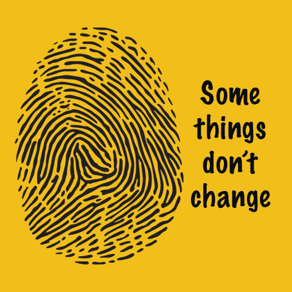The future seems to come at us at a faster pace than before. It brings along with it many questions. Will automation take over our jobs? What new jobs will be created? And which existing ones will be obsolete? How can we survive? Yet some things don't change. Understanding the things that will change and those that won't can help us carve out a better future.
Read moreNewsletter Issue 16: 2 Tips from a 116 year old
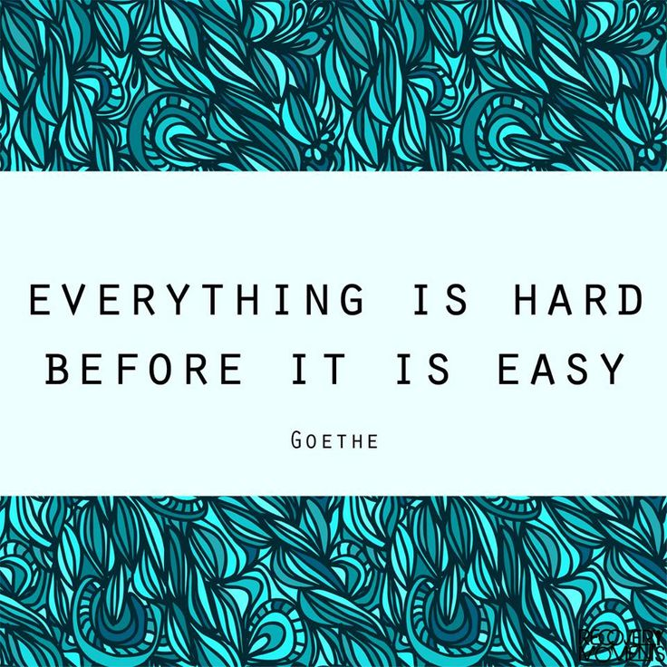Most of us find it hard to change even when we know we need to. If only it's as easy as a walk in the park. But once in a while, a certain change of perspective is all it takes. Hopefully, today can be one of those time for you. We can gain some insights and wisdom from these articles that are worth sharing.
Read moreNewsletter Issue 15: The thing about Time management
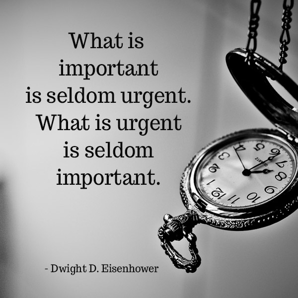Do we need to get better at time management? Or do we need to instead think about Time itself? More specifically, what it means to us - with the very limited time that we have. The answer would be different for each of us. But I'm rather certain that taking time to ponder about Time itself can be a fruitful thing to do.
Read moreNewsletter Issue 14: What you need to beat Diabetes
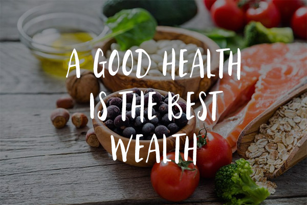The World Health Organization's latest report says diabetes has quadrupled in the past 34 years. It's certainly something that we should care about. Not just for us, but also our loved ones. Here's a starter to help us understand and prevent this disease better.
Read moreNewsletter Issue 13: Hipster Hawker Stalls - Yummy!
Health is important, so is a good life and great food! One of the great thing about being in Singapore is that there's always new food places to explore. In this issue, I'd like to bring you to a couple really good yummy places - wrapped up with a hilarious video you don't wanna miss.
Read moreNewsletter Issue 12: Oh how beautiful, beautiful, beautiful!
Singapore is growing as a cultural center. But why is Art important? And how can Art, in its many forms make our lives better? Deep within all of us, there's a need for expression and appreciation. There's certainly more for us to explore and learn about Art. Do not miss the video below. Oh how beautiful this is ~ a celebration of art and life!
Read moreNewsletter Issue 11: Secrets of the Heart - Uncovered

It is always quite refreshing to discover new things about our health. In this case, Vitamin C is one of those surprises. Do watch the video below till the end ~ it could be a life saver. But please seek your doctor's opinion as well.
Read moreNewsletter Issue 10: The result of reading
The more we read, the more we can share. And sharing is caring. Here are a few interesting articles I'd like to share with you in this issue of my newsletter. Remember to pass it along to those whom you care about too.
Read moreNewsletter Issue 9: This isn't the bucket list
It isn't the bucket either. One good news is that more people are now surviving cancer. The other good news is that life expectancy has increased from 75 to more than age 80. But hold that thought for a moment - it's only good news if one is financially prepared to survive such a critical challenge.
Read moreNewsletter Issue 8: Creativity
We may have thought that creativity is a realm belonging to a selected few. But is it? In this issue, we explore together some interesting stories that may strike a chord of inspiration for you. You can be creative too.
Read moreWall of Trust
Testimonials & Referral Notes
Meet my Trusted Consultant

I first got to know Serene Ho back in 2003 when she took over as my servicing agent. I was hesitant initially thinking that she will be yet another ordinary agent who is only interested in selling . However, she impressed me with her sincerity, looking out always for my interests whenever we meet . We stayed connected with periodic updates and reviews .
Serene engages with her clients well as I find her passionate and experienced in what she does. Her advice is often comprehensive as she patiently explains and explores with me strategies that best suit my changing circumstances and needs over the years.
I am glad I took her advice where applicable and needed as recently I became a beneficiary to my own financial plans which I took up following her diligent follow up and advice. Serene again showed her commitment delivering her exceptional service that exceeded my expectation with my claim. She is definitely my choice financial consultant and will not hesitate to recommend her to my family, friends and colleagues.
Soh Kee Seng
IT Facility Manager
Why I am not keeping Financial Consultant , Serene Ho, to ourselves

We were introduced to Serene recently through our property agent, who has been a guardian mother to Nidhi for the past few years.
We are extremely grateful to Serene for taking time to share with us the importance and nuances of financial planning and insurance. Serene has impressed us with her approach to understand our background and priorities and customizing our sessions specifically to suit the needs of a young couple like us. The awareness we got is now going to help us make better and informed financial decisions.
We also got exposure to financial planning tools she invested in and use that will help us plan and map out our future investments. No policies were pushed to us and no immediate sales pitches were made to quickly make us sign a policy. Instead, our background, current financial situation, future needs and plans were carefully considered and understood before even suggesting what we could consider. Options and recommendations were clearly summarized for us to consider and besides, all our queries were answered patiently and professionally.
We greatly appreciate the customized and customer-specific approach Serene adopted with such patience and clarity. Young adults can not only sign-up suitable policies or start investments but also receive financial education with expert perspectives from her. Financial knowledge is the key to financial success.
It doesn’t take long for us to see her sincerity, commitment and professionalism in the way she does her business , let alone all her existing clients over the 20 yrs and especially those who had begun their financial journey with her with all the necessary fundamental financial knowledge to make informed decisions confidently .
Thank you, Serene for your invaluable service.
Sai & Nidhi
Engineer & HR Personnel
Recommending my Responsive Go to Financial Consultant , Serene Ho

After my previous financial advisor left the service, I got to know Serene through a close friend. Serene has always been earnest about ensuring that the investments I make meet the needs of mine and of my growing family.
Serene fully understands that I, as a full-time working mother, have lots of commitments to attend to. She is meticulous to ensure that I can financially manage the long term upkeep of my investments and stretches every dollar that I spent. She has gone the extra mile to advise about the importance of forward planning for possible early retirement.
Over the years, she assumes great responsibilities to make regular check-ins on my well-being and is consistent in keeping me updated on any changes in my policies or market movements.
She is a responsive go-to person whenever I have any queries about certain claims or policy matters, even if the claimant of concern was not her client. I loved it that her conversations with me have always been very objective, analytical and concise. I am grateful to have found such an attentive consultant like Serene to work alongside with me to meet my financial goals.
Mrs William Loh
Teacher
My Banker friend, now my Financial Consultant

I got to know Serene when we attended the same church cell group together around 1988/89. At that time, she was working in the bank, running the branch operations and thereafter moving to the headquarters , serving the retail market with various loan facilities before transiting to the financial services sector as a financial consultant .
Serene is a caring and loving person. She is always helping and serving others in whatever ways she can. I always enjoy her company and the valuable inputs/ suggestions/ recommendations she gave in the financial area and other personal areas as well.. She is a good friend, not just my Financial Consultant.
She always looks out for my best welfare and not just about selling or promoting the products. This is the key point I saw in her profession all these years. Serene genuinely cares for each of her clients/ friends and their family members. She remembers our birthdays; always updating us on the new changes in Government policies for CPF, investments, life policies etc. and she always remind us to manage our financial resources well and not to leave them idle.
Serene is very versatile , she can advise and work with people of all ages and offer good advice on how to maximise our financial resources according to our willingness to invest and risk appetite.
I am very happy she has become my Financial Consultant and I value her advice and services , which have helped me plan and grow my wealth well all these years.
Kang Ying
Pastor & Mentor
Reliable and Responsive Financial Consultant

Serene has been my financial consultation for more than 15 years . I have learnt much from her .
Serene consistently provides post sale support promptly. She will update me on the latest product that may enhance my asset without being pushy.
I Have no reservation in recommending her service to my friends who require financial planning.
Kudos to you Serene.
Mary Chiang
Physiotherapist
My dedicated Financial Consultant

I was introduced to Serene through a friend in university and had my first policy with her in 2011.
My wife and child have policies with her. When my child was just born, I remember that she sent us a gift hamper to congratulate us. When my child needed surgery later on, the claim procedure was smooth and uneventful, which can only be a good thing!
Serene has kept in contact through the years and is not the sort to contact me out of the blue to buy more. When it was National Day, she even sent me a link to receive our nation’s flag (for free)!!
What I find reassuring about Serene is that she has been in the business for decades. When you need help, instead of finding out your adviser has left for another job, it is nice to know that she will be there. She knows her products inside out, including all the nitty gritty, and gets back to you with information in a timely manner.
Serene knows life has many demands and has helped my family and I get some protection for what is important.
Wee Jin & Jean
Daddy & Mummy of Jay Ong
My To-Go-To Financial Consultant

I’ve known Serene for more than 40 years and for most of those years she has served me as my insurance and investment advisor.
I’ve stayed with her as I faced changes in my life’s profile and circumstance as she has understood and met my changing investment needs and preferences.
When I needed a fresh briefing of insurances I had taken years past, she had been patient to re-explain the scope of the coverage and payment. She has served me well since she became my financial service provider that I’ve not found a need to look for another.
I would recommend her to anyone seeking an experienced, knowledgeable and honest financial adviser whom you could work with over changing life’s seasons.
Elaine Seah
Advisor YWAM
The Consultant with Quality Service Mark!

I first got to know Serene at a work event when I was a fresh graduate. She introduced me to financial planning and got me started on my protection plans. Serene is a veteran in this industry given her experience from the banking sector.
Regardless of your background or work experience, Serene takes the time to understand your financial and protection needs. She provides quality service, not only ensuring that you are well protected but in times of claims, she would do her best to assist you.
Celine Choe
Product Development Strategist
A Financial Consultant who goes the Extra Mile

Serene Ho, a close friend of mine, took over servicing of my husband’s portfolio when his close friend agent passed on. She also became my consultant as we wanted to have the same FC servicing us. As we have known Serene for close to 10 years, we were confident that she will be our trusted and dependable FC. Till this date, I have no regrets with this decision. Through Serene, I have purchased policies to meet the financial needs and goals of my family and I.
Serene has been consistently reviewing my family members’ portfolio every year. She provides an up-to-date summary of the policies which gives me a comprehensive yet concise picture of my wealth protection and wealth accumulation status. I was rather impressed with how systematic her approach has been.
I am grateful to Serene for guiding me with the insurance claims after my husband had a major stroke. When there was a delay in receiving the medical reports from the hospital, she followed up by making enquiries to the Medical Records Office [MRO] and Service Quality [SQ]. This expedited the matter and I was then surprised that the personnel from these departments called me up to find out how they could be of help to me.
Since then, I was just an email or call away from any assistance I needed with the medical reports. This was very helpful because I had to apply for several medical reports for claims from various insurers and other administrative matters. Serene’s proactiveness had facilitated the ease with which I was able to obtain prompt and personalised service from the MRO and SQ.
Serene also met up with me regularly during the initial 6 months after my husband’s stroke to find out how things are with me . She was always concerned about my well being as I had just experienced a rather traumatic event. She also presented the cheque for the insurance payout to me personally which she did not have to. I am thankful to Serene for going the extra mile for me. I am certain that she does the same for others.
Fast forward to 2021, I have made a career switch from a nurse of 30 years to a ‘newbie’ FC, as late as in my fifties. Also, from being my FC, Serene is now my Agency Leader and Mentor. She drove all the way to my home to hand to me by hand the learning resources for my preparation for the licensure examinations to become an FC.
I am confident to entrust my career as an FC to Serene and I have much to learn from her to be successful in this very purposeful and meaningful financial advisory service to others. I hope to emulate her attentive and listening, as well as methodical and analytical, approach.
Serene has been very encouraging, supportive and generous. For this, I am very grateful to her.
Thank you Serene.
Ms Chia Yen-Yen
A Professional Nurse turned Financial Consultant
Meet my Ex-student turned Financial Consultant

I knew Serene Ho as my Economics student in Raffles Institution in 1970s, a bright and diligent student!
I reconnected with Serene at a class reunion and when I learnt that she has become a successful consulant with Prudential , I approached her for financial advice for my grandchildren back in early 2000.
She spent time advising me on how to provide for my my grandchildren’s future education . Serene patiently went through various options to help me understand the dfiferent benefits and this enabled me to make an informed decision based on my goals and dreams for them . I greatly appreciated her strong empathy , her skill and most of all her integrity.
Early this year in 2022, I again consulted Serene on Estate planning to provide and protect my growing up 21 yr old grandson and 17 yr old grand-daughter . Based on their individual needs, Serene very painstakingly explained in a graphic manner the type of investments for my grandson and income protection for my grand-daughter. She helped me put in place what I wish for them to take care of them when I am not around,
She had also accompanied me to settle my Will when I told her I needed to rewrite my Will and have my LPA done. Not only did she recommend me to a professional Will writer , she even accompanied me on all the 3 visits to the Will-Writer’s office to give me some much-needed advice and confidence.
I appreciate the extra effort that Serene took in spending time with me to help address my nagging fears and concerns with regard to my estate planning . Her professionalism is indeed hard to come by nowadays especially when people are always in a hurry! I am glad to have found a consultant whom I can trust with confidence.
Mrs Christine Low
A Retiree /Ex teacher
DISCLAIMER
Please note that the ownership of Website belongs to SERENE HO, a Financial Consultant of Prudential Assurance Company Singapore (PACS). I am wholly responsible for the content contained in this Website. It only contains my personal views, thoughts, and opinions.
The Website is for informational purposes only and is not
endorsed by PACS nor does it constitute any official
communication of PACS. PACS is an indirect subsidiary of
Prudential plc, a company incorporated in the United Kingdom.
Neither PACS nor Prudential pic is affiliated in any manner with Prudential Financial Inc, a company whose principal place of business is the United States of America.
http://prudential.com.sg/fc-info